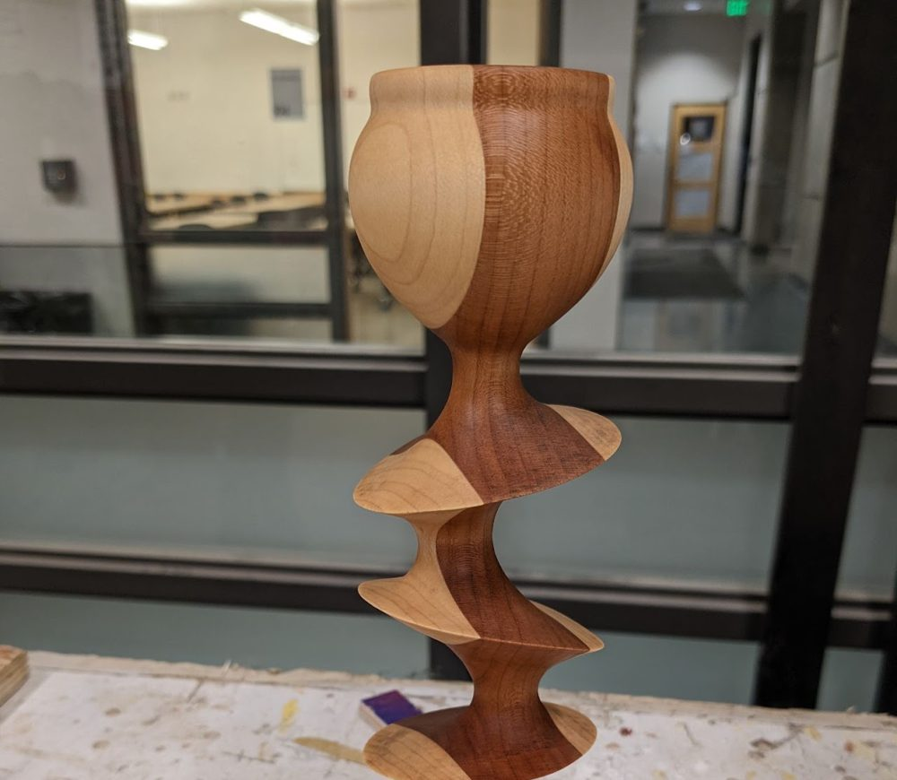

Wood Shop
The wood shop entrance is marked PINK. Inside, tools have their own color-coding system.
Wood shop access is separate from general BTU access and requires an orientation.
For your safety, major equipment including the table saw, band saw, belt sander, chop saw, and drill press is powered off between 10pm and 6am daily.

Wood shop orientations
Registration is required. The orientation schedule and sign-up link are on the BTU calendar.
Orientations are run by the Mischief Makers. Access to certain machines is facilitated by them, and anyone can become a Mischief Maker on any machine.
Wood shop equipment
- Table saw*
- Band saw*
- Drill press*
- Chop saw*
- Belt sander*
- Random orbit sander
- Palm router
- Drills / drivers
- Hand saws
- Files
- Measuring tools
- Other hand tools
*Powered off between 10pm and 6am. Tampering with the timers is considered a serious safety violation.
Wood shop policies
Violation of any wood shop policy will result in loss of access to BTU Lab and the wood shop until both orientations are repeated.
- Use of the wood shop requires an orientation from BTU Lab staff.
- After the orientation, you may use the wood shop under the following conditions:
- Observe all safety rules without exception.
- Do not work alone when no one could hear you if you needed assistance. Stay in earshot.
- Do not operate any tool that you are unfamiliar with. Get assistance.
- Do not alter any machine in a permanent way.
- Do not remove any tools from the wood shop or BTU Lab without staff approval.
- Do not attempt to repair a malfunctioning tool.
- Report malfunctioning tools. It is okay when a tool breaks under normal use; we just want to know what happened so it doesn't become dangerous.
- BTU staff reserve the right to revoke wood shop access for any reason deemed necessary.
- Deadlines, fatigue, and lack of preparation do not justify ignoring any wood shop policy.
- Multiple violations, by one or more people, will result in reduced access for everyone, including locking out machines or the entire space when staff are not available.